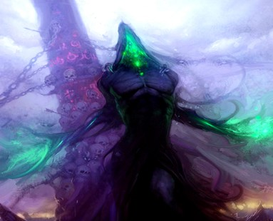
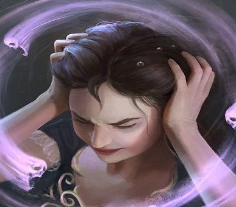
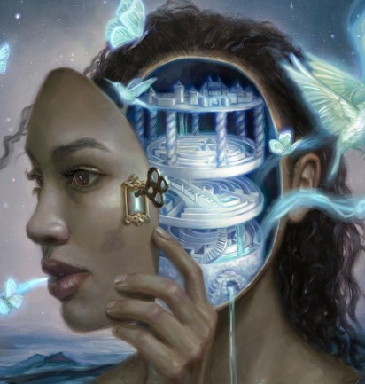
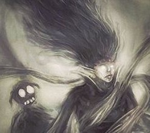
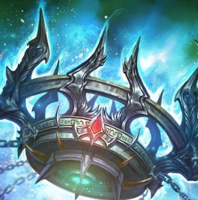

Mist plagued mind destroys the concept of lies and truths
Tier 1: Vivid visions of regicideYour majesty, the rebels broke through the gates, their forces outnumber us....Ever since the calamity.... No Sire, they are vengeful, not to overthrow you... They are here to burn it all down.... |
|
 Madness as a cure to weaknessAny negative stat modifiers that Kai has are multiplied by his level and added to his maximum health pool. Your body refuses to feel pain even in deathly circumstances. |
Premonitions of insanityAs a bonus action you can peer deeper into your own madness. Depending on your D6 roll you get a certain change in your being. All stat reductions are active until the next long rest. All the bonuses are...1.Restraint Your strength score is reduced by double your proficiency bonus. And you gain resistance to a damage type of your choosing for 1 minute. 2. Heavy-Handed Your Dexterity score is reduced by double your proficiency bonus, and you get bonus to your weapon attack damage dealt equal to your proficiency bonus. (Double the bonus if you are using a two handed weapon.) For 1 minute. 3. Delictum You break the rules gaining temporary HP equal to your level for 1 minute. 4. Brutish Your Intelligence score is reduced by double the amount equal to your proficiency bonus. You gain an extra weapon attack as a part of your Action. (Note, any action) 5. Oblivion You attempt to peer into the darkest recess of your mind. Your Wisdom score is reduced by double the amount equal to your proficiency bonus, but you gain immunity to all status effects until the end of your next turn. 6. Atrocity Your Charisma score is reduced by the amount equal to double your proficiency bonus. Refreshes your dragon breath ability and multiplies its damage by your proficiency bonus, and changes its damage type to necrotic. |
Tier 2: Depths of insanity.My king....The court.... You neglect.... For pleasure... |
|
 Mental anguish to empowerYour mental stats can go up to -30. The bonuses work same way as if the stats were in the positives after you drop below -10. |
|
Tier 3: Clarity in the depths of the mad mindMy Liege... My life .... yours...My mind... yours.... Everything... to.... your survival..... To.... help you run from your mistakes. |
|
 Moment of clarityWhenever you are using “premonitions of insanity”, you can pick a premonition.You can use this feature a number of times equal to your proficiency bonus. This feature is restored on a long rest, or once on a short rest in-between long rests. |
|
Tier 4: Penultimate LunacyPrance....My... King Sing... My.... King.... Laugh My... King... Smile.... My.... King... Please..... Open.... your eyes.... My................ King.... |
|
 Delirium’s ApotheosisOnce you have used “premonition of insanity” a total of 15 times you go into delirium until the end of your next turn. During delirium you can transform into King Kai’s true form an ancient Blue Dragon from (Monsters Manual). This transformation lasts for 1 minute or until the end of your turn on which you use an ability, perform an attack or use legendary resistance/action before it.Otherwise normal rules of the transformation apply as per “Shapechange” spell. |
|
Tier 4,5: Visions of infinite LiesA strangest dreams of days long lost, peppered by untruths and conspiracy.I see... Asha, in its glory, myself on the throne with my advisor Astaroth next to me. My power divine, undisputed.... I see a critter coming to my court, with a report... That my people plan a rebellion? Preposterous! I hear myself ordering an investigation, giving my word, a royal word. I hear Jesters voice.... he will help. I see.... circles of Asha, as the critter descends to in...vest..igate... I see dirt, feel the stench, hear cries of uneducated masses. Politics.... They are.... mortal pursuits....Grey robes.... poverty. The critter... came back.... found a culprit... He ascends.... I see the traitor before me... Myself royal, divine. There stands Astaroth. Chased away by my royal ...decree... The critter did good, but betrayed me. I see dragon breath leaving my maw. Two piles of ash before me... I hear Jesters voice.... He says that he will find culprits.... He needs an army.... Why are bones of my siblings here?.... In Asha...? Will Jester save Asha... Will I? |
|
Premonition of DelusionWhen you use premonition of insanity before a long rest you can choose to roll twice instead of once, and take both, one of, or neither result. You can use this feature a number of times equal to your character level. |
|
Tier 5: Lies to oneself to fool the world- My king… you hear a voice saying, choking through tears.- One… last joke…. if you would…. - A King, a Wizard and a Joker enter a brothel… - Two of them die, two of them live. - How? Cause the king lives eternal of course! Nearly maniacal laughter that followed slowly turned into desperate wallowing, until the voice grew silent. |
|
 A king of FalsehoodsYou gain access to two abilities. Once you use one of them, you are unable to use the other until the next long rest.1.1)A small lie to disbelieve Whenever you use your premonition of insanity you can infuse the benefits of it into a willing creature within the touch range from you. You incur the stat loss. You can use this ability a number of times equal to your proficiency bonus. The uses are restored upon a long rest. 1.2)A big lie to trust Once per long rest as a bonus action you infuse the target with every benefit you gained from premonitions of insanity and premonitions of delusion thus far. This lasts until the end of your next turn. |